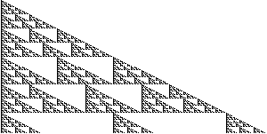

1. Pascal's triangles for
|  | |
| 1 (mod 2) | 1 or 2 (mod 3) |
First observe these graphs grow at twice the horizontal rate as the standard
Pascal's triangle. This is no surprise, because the polynomial for each row
is obtained from the one above by multiplying by
The left picture is not a distortion of the standard Pascal's triangle
shading the odd terms, but the right picture is a distortion of the
standard Pascal's triangle shaading the terms congruent to
Return to Other polynomials Exercises.